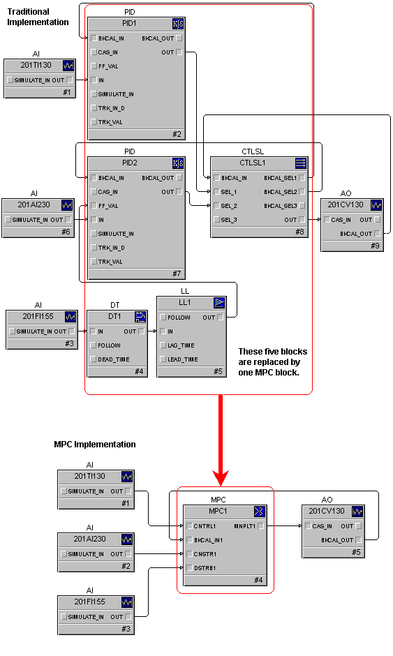
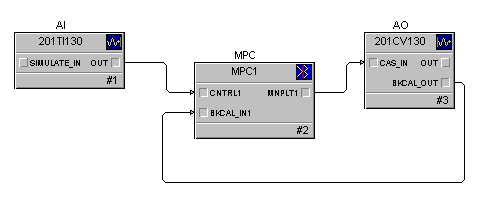
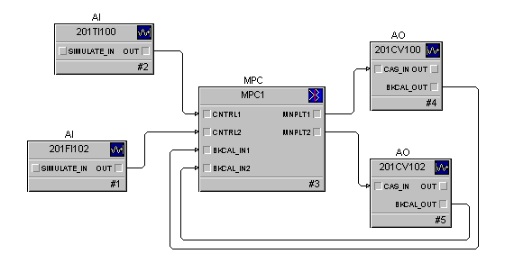
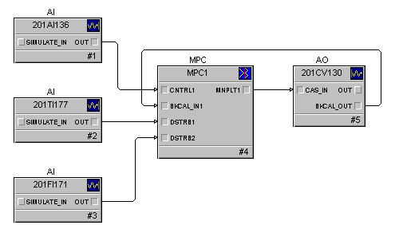
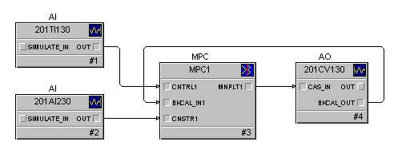
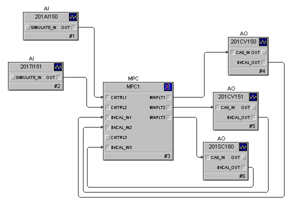
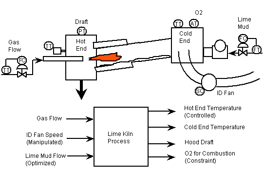
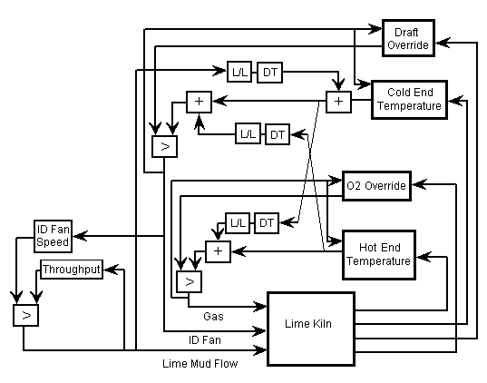

Model Predictive Control function block application examples
The MPC function block provided by DeltaV Predict may be used to address multivariable control requirements You can use the Predict application to create process models and control definitions from process data. The automated test feature of the Predict application allows the step response of controlled or constraint outputs to be determined based on changes in the manipulated inputs. This capability can meet multivariable control requirements in all process industries. In many cases, the MPC function block can replace control techniques that have traditionally been used to address the control requirements of multivariable processes.
Multivariable control is defined as control that uses multiple process measurements to produce one or more outputs. The techniques available to an engineer for implementing multivariable control have been limited to the conventional capability available in most commercial process control systems. The most commonly used techniques are illustrated in the table entitled "Traditional Multivariable Control Techniques." You can combine such techniques to address the control requirements of a multivariable process. However, as the number of interacting control loops, operating constraints, and load disturbances used in the control increases, the complexity of the control system is often beyond that which can be maintained by the typical plant engineer or instrument technician. You can use a single MPC function block to address the complete requirements of many multivariable processes.
The implementation and commissioning of the MPC function block are far simpler and faster than traditional techniques, as is shown in the following figure. The difference is even more dramatic for applications involving a larger number of controlled, constraint, or disturbance parameters or the optimization of throughput.

Applications that may benefit from MPC control can be identified based on your process knowledge. The following guidelines may be used to determine when MPC should be considered.
Single or multiple loop control that is characterized by either long delay or inverse process response. Since the control action taken by an MPC function block is based on a process response model, you can achieve better control than would be possible with PID feedback control or deadtime compensation techniques, such as the Smith Predictor. The response model used by MPC is determined by the Predict application during commissioning.
The interaction of two or more control loops impact process operation (that is, a change in the output of one control loop impacts the control parameter of the other control loops in a significant manner). Such interaction is accounted for when control action is taken by the MPC function block. Therefore, control may be improved since any correction that is taken to adjust one control parameter only impacts that parameter.
One or more disturbances to any controlled parameters are measured. By including these measurements in the control, the MPC function block compensates for the impact of disturbances. As such, changes in the disturbance input have little or no impact on the controlled parameters.
One or more measurable constraints must be observed in control of the process. The MPC function block constantly calculates the impact of a disturbance or control action on constraint parameters. If the future value of a constraint output violates its limit, MPC takes the appropriate action to prevent the constraint limit from being violated.
Production is limited by one or more inputs to a process. Control of the throughput may be included in the MPC along with the control associated with the inputs that limit production. Throughput is adjusted to maintain the process at its input limit and achieve maximum production.
The execution rate of the MPC function block is limited to one second or slower. Therefore, MPC should be applied to processes where control requirements may be satisfied at these execution speeds.
Difficult process dynamics
When the process response to a change in the manipulate input either is dominated by delay or exhibits an inverse response, regulation provided by PID control may be too sluggish to meet your control requirements. In such cases, you can use the MPC function block for this control application. Since the control provided by MPC is based on an accurate model of the process, you may achieve tighter control than can be achieved with PID. An example implementation of MPC for single loop control is shown in the following figure.

Interacting control loops
The model that is developed for MPC control captures the impact of a change in manipulated and disturbance inputs on all of the process outputs. Therefore, the MPC function block can correct for a deviation in one controlled parameter without impacting other controlled parameters associated with the block. Such control can be implemented and commissioned more quickly and easily than by using traditional techniques, such as decoupling networks, to compensate for loop interaction. An example of the control of two interacting control loops using MPC is shown in the following figure.

Measured disturbances
The dynamics associated with a measured process disturbance are identified by the MPC process model. This model is the basis for MPC control. It allows the control to compensate for disturbances. No additional dynamic compensation elements are required to compensate for process disturbances (as with traditional techniques). An example of a single control loop with two measured disturbances is shown in the following figure.

Measured constraint
Constraint handling is an integral part of the MPC function block. The impact of disturbances and changes in manipulated inputs on the constraint may be predicted; such impact is based on the predictions made by MPC. When the value of the constraint is predicted to exceed the constraint limit defined by its setpoint, the internal target of the associated controlled parameter is reduced. This occurs so that the resulting changes in manipulated inputs prevent the constraint from exceeding its limit. As part of the constraint configuration, you must identify the associated controlled parameter and indicate whether the constraint setpoint represents a minimum or maximum limit. An example of a single control loop with one constraint is shown in the following figure.

Process input limits production
One manipulated input defined for the MPC function block may be identified as an optimizing input (that is, an input that is to be maintained either at target or at a value that keeps one of the other manipulated inputs at a defined maximum or minimum limit). When a manipulated input is selected for optimization, you must configure a minimum or maximum limit for the other manipulated inputs. Also, no connection is required for the control input associated with the manipulated output used to set throughput. When the throughput setpoint is changed, the manipulated output for throughput adjustment will be changed until the setpoint is reached. If another manipulated parameter reaches or exceeds its configured high or low limit on a change in either throughput target or during normal operations, the throughput will be adjusted to maintain the manipulated output at its limit. An example of an MPC function block being used to control two parameters as well as optimized throughput is shown in the following figure.

Large multivariable applications
The design of many processes requires that the control strategy address multiple controlled, constraint, and disturbance outputs through the adjustment of multiple manipulated process inputs. The MPC function block can control processes of size 8×8 (for example, four controlled, four constraint, four disturbance, and four manipulated parameters maximum). The lime kiln example in this topic demonstrates how the techniques used in previous examples may be combined to meet the control requirement of a more complex process.
The following figure illustrates a typical lime kiln process and instrumentation for the recausticizing area of a pulp mill. This process is 3×4 in size, where gas and ID fan speed are manipulated to control the material and exit gas temperature at the hot and cold end of the kiln. Constraints on gas and ID fan speed adjustment are set by limits on O2 and hood draft, respectively. The lime mud flow throughput is maximized within the constraints of the ID fan speed limits.

A traditional control strategy for the lime kiln is shown in the following figure. For simplicity, the PID controller associated with the mud flow and gas flow are not shown but are required in the final implementation. The kiln control requires a total of six PID controllers (plus the gas and lime mud flow PID controllers), three control selectors, and nine math and dynamic elements. A decoupling network addresses the interaction between the hot and cold end temperature control. Constraints on O2 and draft are provided as overrides on gas flow and ID fan speed adjustment. Throughput is maximized based on the ID fan being the limiting factor on production.

The equivalent control is provided by one MPC function block. The complete control strategy (including the lime and mud flow control) using the MPC function block is shown in the following figure.